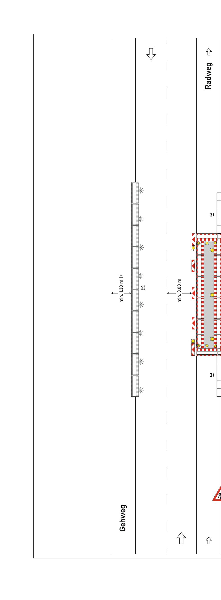

🚧 VZP
RSA 21
📍
🖼
Regelplan wählen
Parameter
Seite
→ Rechts
← Links
Breite (m)
Tempo
50 km/h
30 km/h
📍 Regelplan platzieren
2 Punkte auf der Karte tippen: Start und Ende der Baustelle.
Platzieren
Löschen
Anzeige
🖼 RSA-Bild
Projekt
Name
💾 Speichern
📂 Laden
Export
1 Baustelle
2 Projekt
3 Ausgabe
Adresse
Regelplan
Seite
Tempo
Breite
Adresse, Regelplan und Parameter werden automatisch aus der aktuellen Planung übernommen und können hier vor dem Export geprüft werden.
Bauvorhaben
Auftragg.
Ersteller
Plan-Nr.
Vorschau
Prüfung
Zurück
Weiter
Projekt
Ersteller
📄 PDF exportieren
K5
Straßen
Luftbild
OSM
📐
🖼
📍
1
Tippe den Startpunkt der Baustelle
✕

B II/1
Deckkraft
—
Z17
📏
—
•
🚶
—
•
🚗
—
📐 Regelplan
✕
Plan wählen
Parameter
Seite
→ Rechts
← Links
Breite (m)
📍 Platzieren
2 Punkte auf der Karte: Start & Ende.
Platzieren
Löschen
📄 Export
✕
Projekt
Name
💾 Speichern
📂 Laden
1 Baustelle
2 Projekt
3 Ausgabe
Adresse
Regelplan
Seite
Tempo
Breite
Der Export übernimmt die aktuelle Baustelle automatisch und zeigt dir vorab die wichtigsten Angaben.
Bauvorhaben
Auftragg.
Ersteller
Plan-Nr.
Vorschau
Prüfung
Zurück
Weiter
Projekt
Ersteller
📄 PDF exportieren
🗺
Karte
📐
Regelplan
📄
Export